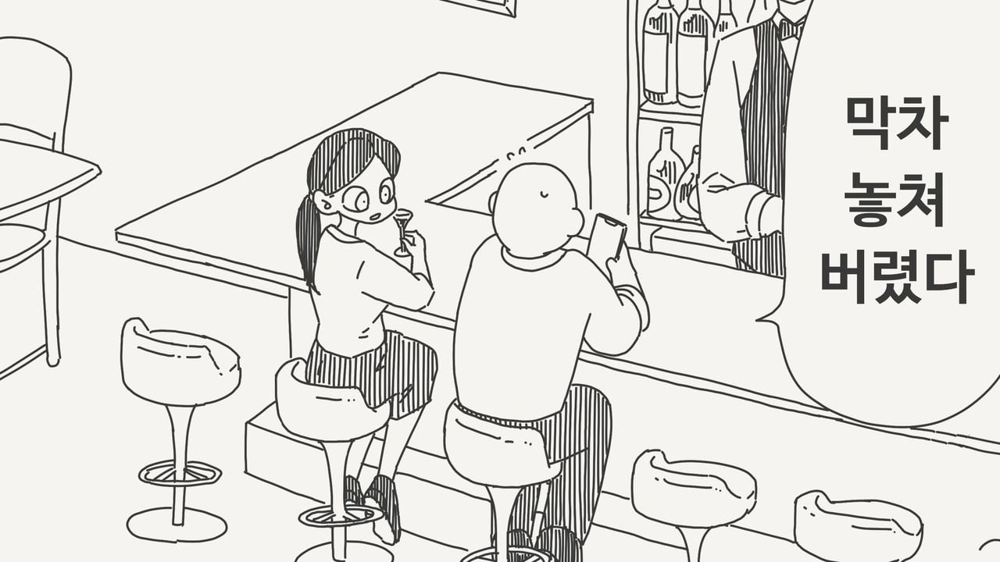
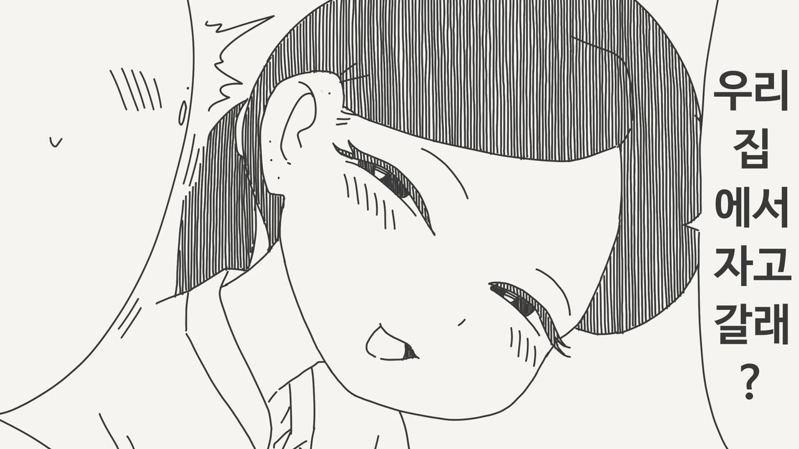
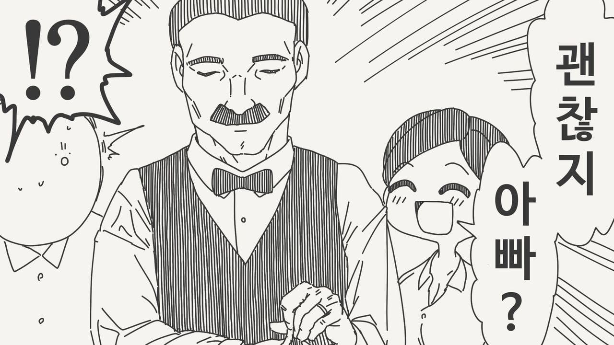
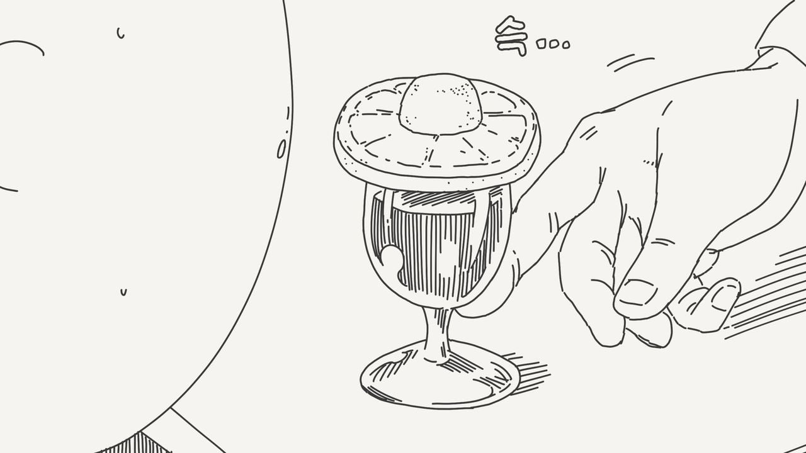

각오, 결심이라는 뜻을 가지고 있습니다.




각오, 결심이라는 뜻을 가지고 있습니다.
오 해석 괜찮네
드시고나면 반품 및 환불은 어려우세요~
야스 만화 주제에 이런 메시지를....?
이런 애들이 평론가 하는거구나.... 쩐당.
야동진 ㄷㄷ
아니 ㅅㅂ 만신 맞잖아 ㅋㅋㅋㅋ
캬.........
아뇨 콘돔써라 란 의미
해석 개쳐어렵네 ㅋㅋ
환불, 반품은 안된다
얌마 얼른 뛰쳐나가서 택시를 타고 집으로 가 !!
콘돔은 쓰라고 콘돔모양 만들어준거 아님?
유두모양 올려준건줄 알았는데
XYZ 줬으면 꺼지란 뜻이었으려나 ㅋㅋ
니콜라시카(Nikolaschka)
설탕 레몬 브랜디 값비싼 재료로 만들지만 바텐더가 완성하지 못하고 먹는 사람의 입안에서 만들어진다
귀하게 키운 소중한 딸이지만 내가 관계까지 결정하지 못한다. 여기부터는 니 책임이다 이건가